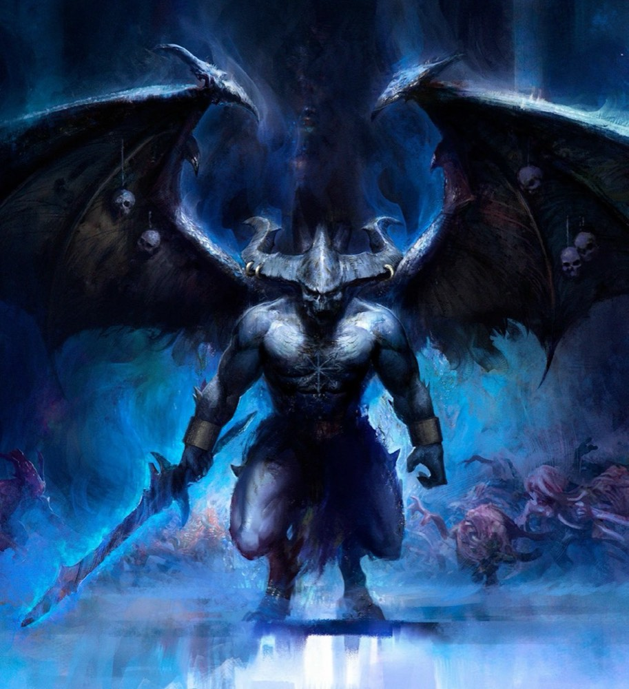

Be'lakor
| Be'lakor | |
|---|---|
| The Dark Master, the First-Damned | |
 Be'lakor with the Blade of Shadows, from an Ordo Malleus bestiary | |
| Daemon Prince of Chaos Undivided | |
| Tenure | Before recorded history – present[a] |
| Patrons | Khorne, Nurgle, Tzeentch and Slaanesh together |
| Master of the Disciples of Be'lakor | |
| Tenure | Early M42 (estimated) – present |
| Origin | Unknown; once a mortal champion |
| Status | Active; reported in the Imperium Nihilus |
| Allegiance | Chaos Undivided |
| Domain | Korvosi, the stolen Knight world of Kolossi (since early M42) |
| Wargear | The Blade of Shadows |
| Known for | First Daemon Prince; the attack on the Phalanx (999.M41); the Charadon campaign |
Be'lakor, called the Dark Master and the First-Damned, is a Daemon Prince of Chaos Undivided. The Ordo Malleus holds him to be the first mortal ever raised to daemonhood, and the only one raised by all four Chaos Gods acting together. Each god gave him a part of its power, and for a time he was the mightiest servant of Chaos. The gods soon found him impossible to control, began to raise princes loyal to one god alone, and divided their favour among them, and Be'lakor has nursed a jealousy of every other favoured champion ever since.[1]
He works by deceit and from the shadows, appearing in his true form only when his schemes are ripe. He is reported to have moved behind the rise of Abaddon the Despoiler for thousands of years, and in 999.M41 he attacked Terra itself aboard the Imperial Fists fortress-ship Phalanx. In the Era Indomitus he raised an army of his own, the Disciples of Be'lakor, and in the Charadon campaign stole an entire Knight world through the Warp.[1][2]
Origins
[edit]The origins of Be'lakor survive only in legend, in the words of captive daemons and in carvings found on dead worlds. The legends tell that he ruled mortal empires from the dawn of thinking life, making a race worship him as a god until it was ruined by his greed, and then moving on to another. Several times, the stories say, he ruled empires of a thousand worlds. Even the Grey Knights know little of his history that is not contradictory.[1][3]
The gods' quarrel over him is recorded in the daemon lore of the Malleus. At first they competed to win his loyalty, as children squabble over a toy. When they saw that a servant holding the power of all four could not be ruled, they withdrew much of it and raised new princes, each sworn to one god. Be'lakor remained the strongest of the Daemon Princes, but he was no longer the only one.[1]
The Adeptus Mechanicus magos Kyber Arbastri has spent his life gathering relics in the galactic wilderness: winged statues carved from the bones of psykers, scrolls of skin showing figures bowing before a winged shape, and fragments of horn sealed in caskets. He believes they are the traces of a single xenos overlord. The Inquisition believes that Be'lakor himself has placed the clues in his path, and that the magos is gathering the Dark Master's lost objects of power on his behalf.[1][b]
Shadow of the Despoiler
[edit]Be'lakor believes he works for himself. The Malleus holds that he is the tool of the gods' Great Game: when he destroys a champion of Nurgle he does the work of Tzeentch, and when he brings down a servant of Khorne he does the work of Slaanesh. In the long ages since the Horus Heresy he has shadowed Abaddon the Despoiler through all thirteen Black Crusades (781.M31–999.M41).[1]
- In the Third Black Crusade (909.M32) he is said to have persuaded the Daemon Prince Tallomin to aid Abaddon in the attack on Cadia. Tallomin inflicted terrible losses on Cadia, but many Black Legion warbands were lost with him.
- In the Sixth Black Crusade (901.M36) he told Abaddon of the treachery of Drecarth the Sightless, which led to the destruction of the warband called the Sons of the Eye.
In both cases his actions helped Abaddon rise, while costing the Despoiler forces he might have kept. In the Thirteenth Black Crusade of 999.M41 Be'lakor marched with Abaddon and won a place in his inner circle. The Inquisition is certain that he plots against the Warmaster, but not how.[1]
The attack on the Phalanx
[edit]In 999.M41, while the Thirteenth Black Crusade was under way, Be'lakor and the Iron Warriors Warsmith Shon'tu attacked Terra, each hoping to outdo Abaddon. A Warp rift opened in the heart of the Phalanx, the mobile fortress of the Imperial Fists, and the daemons and traitors tried to seize the ship and turn its guns on the Imperial Palace. The newly raised 3rd Company under Captain Garadon held them off long enough for the Phalanx to enter the Warp, carrying the battle away from Terra. There the Imperial Fists were joined by the spectral warriors called the Legion of the Damned, and together they retook the ship. The Phalanx then went on to fight at Cadia.[2][4]
Era Indomitus
[edit]
Since the opening of the Great Rift in 999.M41, Be'lakor has been sighted fighting beside the daemon legions of each of the four gods and beside many Traitor Astartes warbands, including the Black Legion. In the early Era Indomitus he gathered daemons, Traitor Astartes and cultists into an army of his own, the Disciples of Be'lakor.[2]
During the Indomitus Crusade, Typhus of the Death Guard invaded the Charadon Sector. Be'lakor followed him there with the Disciples and allied with the Word Bearers. While most of the knights of House Raven were away, he corrupted Sacristans of the house and through them the Thrones Mechanicum of some of its Knights. He then took the house's homeworld, the Knight world of Kolossi, with the help of the traitor Knights, and moved the whole planet through the Warp into the Imperium Nihilus. There it became the shadowed world Korvosi, and its fallen Knights became House Korvax, an infernal house of the Dark Mechanicum. House Raven fights on as a crusading house.[2][c]
Powers and wargear
[edit]Be'lakor moves like smoke and shadow and spreads terror before him. He can wrap a battlefield in darkness and claws at the minds of his enemies with psychic power. His sword, the Blade of Shadows, shifts between solid steel and silhouette and cuts through any armour. Whether it is part of the daemon or a gift of the gods that he kept after his fall from favour is not known.[1]
Timeline
[edit]| Date | Event |
|---|---|
| Before recorded history | Raised as the first Daemon Prince by all four gods |
| 781.M31–999.M41 | Shadows Abaddon through the thirteen Black Crusades |
| 909.M32 | Third Black Crusade; Tallomin turned against Cadia |
| 901.M36 | Sixth Black Crusade; the Sons of the Eye destroyed |
| 999.M41 | Thirteenth Black Crusade; attack on the Phalanx |
| 999.M41 | The Great Rift opens |
| c. 010.M42 | Charadon campaign; Kolossi stolen and remade as Korvosi (estimated) |
See also
[edit]Notes
[edit]- ^ No Imperial record gives a date for Be'lakor's ascension. The Ordo Malleus holds that it predates the Age of Strife and very probably the human species.
- ^ The activities of Magos Kyber are dated to the late M41 and early M42. His own reports have not been released by the Inquisition.
- ^ The Charadon campaign is dated to the first decades of M42 by the Indomitus records. No exact year is given; c. 010.M42 is estimated from the sequence of the Crusade.